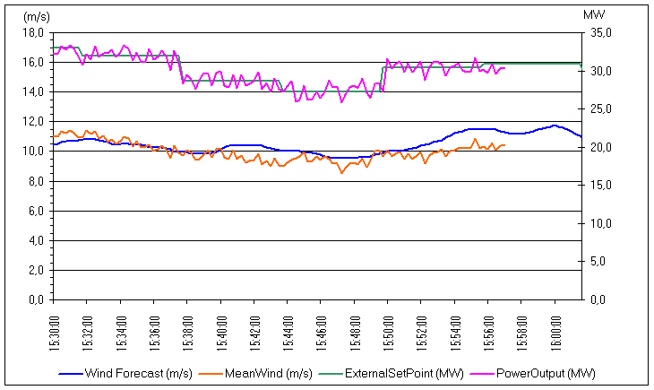

In a wind farm there is a Control Centre (usually in a building strategically located in the territory where the Park is deployed), from which the state of the Aerogenerators is monitored and its start-up and stop, the maximum power to generate and the reactive power is ordered. A key part of these operations is carried out through a Monitoring and Control System (SCADA) (Supervisory Control And Data Acquisition),that hasa communication channelwith each and every aerogenerator in the park. Its mission, however, is not to maintain the functioning of each of the components of each of the Aerogenerators: the Aerogenerators can be assimilated toIndependent Production Plants, capable ofautonomous operation.
The SCADAs perform functions of:
•the collection of the operational data of the aerogenerators for storage and analysis;
•the remote control of the aerogenerators, being understood as the ability to give basic orders of "Start" and "Stop," and depending on the aerogenerators, the ability to change certain operating parameters (e.g., maximum active power, reactive power, etc.)
The wind farm usually delivers its production according to certaincontract terms. These conditions basically include how much active power and how much reactive it is committed to deliver. The SCADA system can carry out operations that guarantee the commitments made, taking into account plant maintenance operations.
For this, SCADA also receives data fromexternal systemsthatpredict the wind. Based on these predictions, the production conditions are determined, usually made by the operator of the transmission in the Electric Network (TSO: Transmission System Operator).
As a result, there is a basic control table in the SCADA shown in the following fig 1.

Fig 1In this graph thewind forecast(inblue),demand forecast(production required) (ingreen), together with thereal wind evolutionto the present time (inorange) andproduction generatedto the present time (inpink). This is the basic command box of the wind farm.
It can be seen that the value of the planned demand changes and remains stable in approximately15 minutes. This parameter is part of the agreement with the Transmission System.
It can also be seen that theproduction generatedit is fairly accurate, on average, to meet the expected demand.
On the other hand, the SCADA system has a synoptic where it can be seen graphically, and quickly, the state of each of the park's wind turbines. As shown in the following figure.
 Fig 2.
Fig 2.
The power cabling between the aerogenerators and theCFP (Common Connection Point o Point of Common Connection), where the connection to the Electric Network is produced.
Companies that manage a large number of wind parks have additional control centres, also based on SCADA systems, which receive and add information from SCADAs in the parks. The next photo shows one of these facilities.